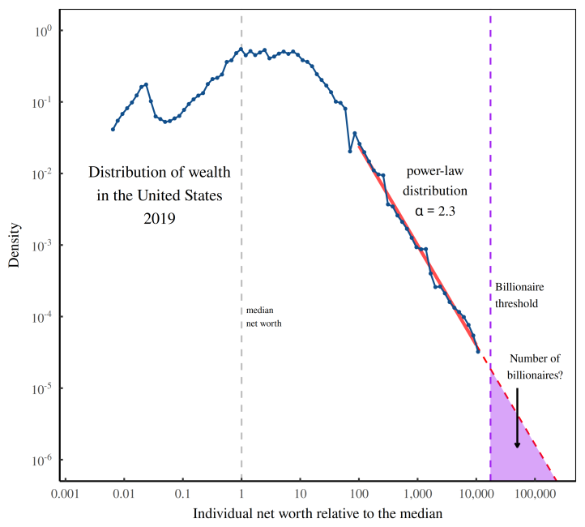
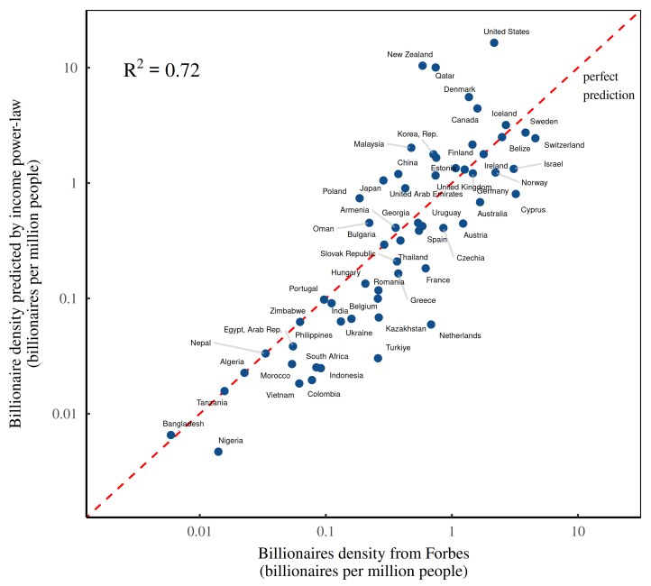

13 Power laws
Recent advances in network science show that many growing associations – including those whose evolution is often thought of as spontaneous and voluntary, from the internet and World Wide Web, to aviation routes and NGO ties, to production chains, academic publications and terrorist organ- izations – end up developing into so-called scale-free networks. The term ‘scale-free’ here in- dicates that the size of the nodes, measured by the number of their connections, does not have ‘typical’ scale. Instead of following a bell-shaped distribution, it obeys power laws, with a small number of very large hubs dominating a countless mass of smaller nodes. So here too we have hierarchy. (Bichler & Nitzan (2021) Growing through Sabotage)
13.1 Generative Models
Mitzenmacher Abstract
Recently, I became interested in a current debate over whether file size distributions are best modelled by a power law distribution or a lognormal distribution. In trying to learn enough about these distributions to settle the question, I found a rich and long history, spanning many fields. Indeed, several recently proposed models from the computer science community have antecedents in work from decades ago. Here, I briefly survey some of this history, focusing on underlying generative models that lead to these distributions. One finding is that lognormal and power law distributions connect quite naturally, and hence, it is not surprising that lognormal distributions have arisen as a possible alternative to power law distributions across many fields.
Mitzenmacher Memo
13.2 Income Distribution Power Law
Fix Abstract
Although the determinants of income are complex, the results are surprisingly uniform. To a first approximation, top incomes follow a power-law distribution, and the redistribution of income corresponds to a change in the power-law exponent. Given the messiness of the struggle for resources, why is the outcome so simple?
This paper explores the idea that the (re)distribution of top incomes is uniform because it is shaped by a ubiquitous feature of social life, namely hierarchy. Using a model first developed by Herbert Simon and Harold Lydall, I show that hierarchy can explain the power-law distribution of top incomes, including how income gets redistributed as the rich get richer.
Fix Memo
Although the causal mechanisms may appear complex, the mathematical mechanisms for generating power laws are surprisingly simple. I will discuss two main routes. (For a review of mechanisms for generating power laws, see Mitzenmacher, 2004.)
The first route to a power law is through income dynamics. Suppose an individual starts out with annual income I . Over time, their income grows and shrinks for reasons that we do not understand. But what we do know is that this income change can be modelled as a random number. After t years, the person’s new income is the product of successive random growth rates, g :
\(I_t = I_1 * g_1 * g_2 * ... * g_t\)
Now suppose that everyone’s income behaves the same way: it is the product of a series of random growth rates. After many growth iterations, the resulting distribution of income will follow a lognormal distribution — a fact discovered by Robert Gibrat (1931).
To get a power-law distribution, we introduce one more requirement: a lower ‘wall’ that limits the smallness of incomes. If anyone’s income gets below this lower threshold, it gets ‘reflected’ in the opposite direction. After many growth iterations, income will be distributed according to a power law.
This ‘stochastic’ model of income was first articulated by David Champernowne (1953). While the model’s mathematics are beyond dispute, many political economists find its appeal to ‘randomness’ troubling. After all, incomes have definite causes (or so we believe). But to be fair to the Champernowne model, it does not claim that income dynamics are actually random, only that we can model them as such.
The Champernowne model tells us that we can understand the power-law distribution of top incomes without knowing anything about the complexities of human behavior. All that we need are general assumptions about the dynamics of income. I find this result fascinating because it is counter-intuitive. Yet it is also underwhelming because it does not tell us why people earn what they do. For that reason, I will focus on a second route to power laws — a route that can be tied to social structure.
The second route to a power law comes from merging two different exponential functions. Suppose two variables, \(x\) and \(y\) , are both exponential functions of a third variable, \(t\) :
\[x = e^{a*t}\]
\[y = e^{b*t}\]
If we combine these two functions and eliminate t , we find that x and y are related by a power law:
\[y = x ^{b/a}\]
So we can create a power law by merging two exponential functions. The question is, why would such functions apply to income? The answer, I propose, is simple. These are the equations that describe income in a hierarchy.
Because Simon and Lydall’s pioneering research was completed a half century ago, one would think that today there would be a burgeoning literature on the distributional consequences of hierarchy. Sadly, this is not the case. Instead, shortly after Simon and Lydall published their work, the study of income distribution became dominated by human capital theory, which focused on personal traits and neglected ‘structural’ explanations of income.
Treating CEOs as canaries in the coal mine. I propose that the exploding pay of CEOs is part of a wider redistribution of income within hierarchies. It is evidence that US firms are becoming more despotic: Rulers can use their power to benefit the group. But they can also use their power to enrich themselves. The more they do so, the more ‘despotic’ the hierarchy. The more despotic the hierarchy becomes, the more rapidly income will increase with hierarchical power.
It makes sense, then, to use the scaling of income with hierarchical power, D , as a measure of the ‘degree of hierarchical despotism’. The greater the value of D , the more despotic the hierarchy.
\[relative income \propto (hierarchical power)^D\]

In large hierarchies, the value of \(D\) affects top incomes dramatically. For instance, when \(D=0.1\) , a CEO with one million subordinates will earn only about 4 times more than a bottom-ranked worker. But when \(D=1\) , the same CEO will earn a million times more than an entry-level employee.
13.3 Timescaling Rainfall
Abstract Benestad
Abstract A simple formula for estimating approximate values of return levels for sub-daily rainfall is presented and tested. It was derived from a combination of simple mathematical principles, approximations and fitted to 10 year return levels taken from intensity-duration-frequency (IDF) curves representing 14 sites in Oslo. The formula was subsequently evaluated against IDF curves from independent sites elsewhere in Norway. Since it only needs 24 h rain gauge data as input, it can provide approximate estimates for the IDF curves used to describe sub-daily rainfall return levels. In this respect, it can be considered as means of downscaling with respect to timescale, given an approximate power-law dependency between temporal scales. One clear benefit with this framework is that observational data is far more abundant for 24 h rain gauge records than for sub-daily measurements. Furthermore, it does not assume stationarity, and is well-suited for projecting IDF curves for a future climate.

13.4 Billionaire Power Law
Fix
If we carry out the extrapolation shown in the figure (below), we predict that the US had about 7 billionaires per million people. That’s not far from the Forbes billionaire count — which is around 2.2 billionaires per million people (in 2021).
Of course, the ‘not far’ has to be judged in context. Yes, we’re off by a factor three. But across countries, the billionaire headcount varies by a factor of ten thousand.
The ritual of capitalization provides a simple way to convert income into wealth. And that means we have a path for using income data to directly predict the number of billionaires.
The steps are nearly the same as before. We fit a distribution of wealth with a power law, and then use this power law to predict the number of billionaires. The difference now is that we derive our wealth data by capitalizing income.
By looking at the distribution of income, we can predict the presence of billionaires with startling accuracy.

Fig: Extrapolating the wealth distribution into the billionaire zone. This figure illustrates how we can use the tail of the wealth distribution to predict the number of billionaires. First, we fit the distribution tail with a power law. Then we extrapolate this power law into the region where billionaires live. Finally, we predict the number of billionaires by calculating the area of the purple shaded region.

Fig: Predicting the number of billionaires from the power-law distribution of income. This figure illustrates what happens when we use income data from the World Inequality Database to predict the density of billionaires in various countries. The prediction works as follows. First, I fit a power law to the top 0.1% of the income distribution in each country. Then I use this power law to predict the number of billionaires. (Note that to convert income into wealth, I capitalize income using a discount rate of 5%.) I’ve plotted billionaire predictions on the vertical axis. Forbes billionaire counts appear on the horizontal axis. Perfect predictions fall on the dashed red line.
What the figure shows is that billionaires are socially made.
Suppose that apologists for the über rich are right when they assert that most billionaires are ‘self made’. If this claim were true, then their ascent to outrageous wealth shouldn’t depend on the social context. No, by shear force of will, each billionaire bootstraps himself/herself into existence. So if we want to predict the presence of billionaires, we should look at their individual characteristics.
Now to the flaw in this reasoning. In the figure, individual characteristics are nowhere to be seen. Instead, we’ve predicted billionaire headcounts by looking at the social environment — the distribution of income. The unavoidable conclusion is that billionaires overwhelmingly owe their existence not to themselves, but to everyone else.
There’s something delightfully satisfying about using Forbes data to show that billionaires are socially made. That’s because, perhaps more than any other publication, Forbes loves to swoon over the ‘self-made’ status of the über rich.
We can accurately predict the presence of billionaires using a social criteria — namely, the distribution of income.